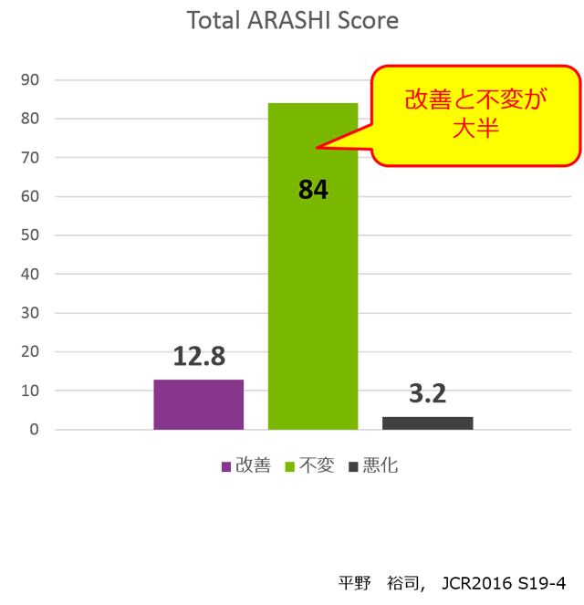
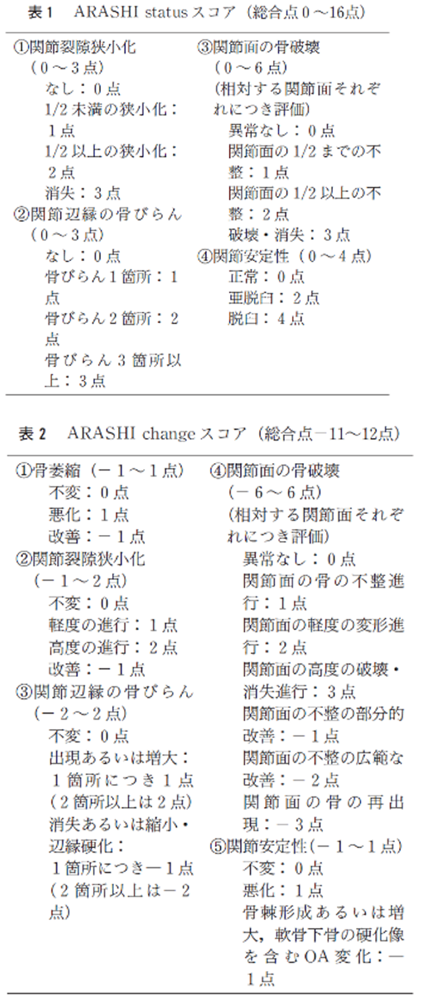

アクテムラは大関節破壊を抑制する可能性
ACTを2年継続可能であった22例の大関節破壊を評価

ARASHIスコアリングシステムLarsen grade の問題点を改善し、より詳細に大関節の評価が可能

Kaneko A,Matsushita I,Kanbe K,et al.:Mod Rheum, 23:1053-1062, 2013
ACTを2年継続可能であった22例の大関節破壊を評価
ARASHIスコアリングシステムLarsen grade の問題点を改善し、より詳細に大関節の評価が可能
Kaneko A,Matsushita I,Kanbe K,et al.:Mod Rheum, 23:1053-1062, 2013